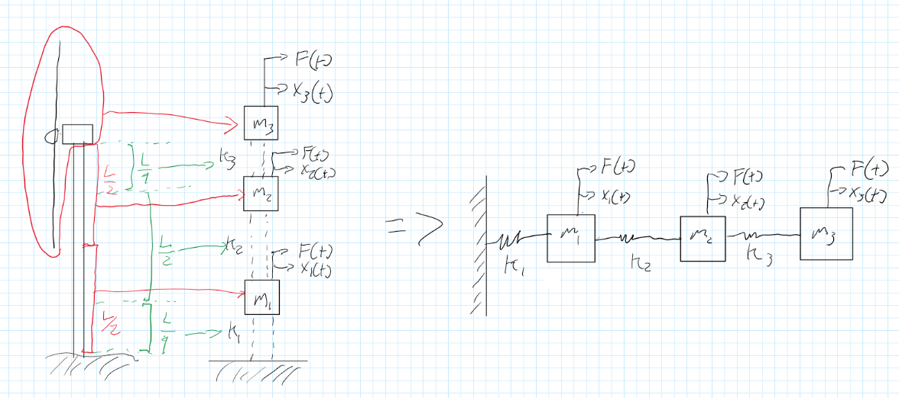
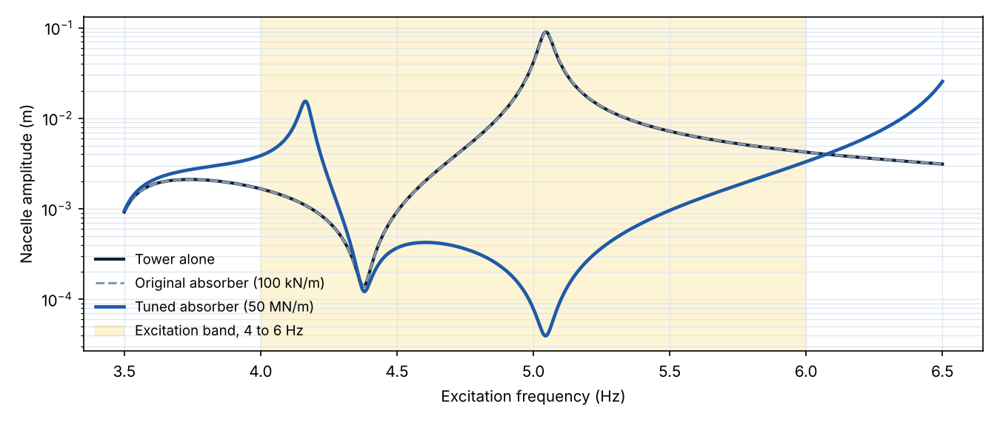

Mechanical design
Wind turbine tower vibration absorber
Bigger blades make wind turbines more efficient, but they also shake the tower. We modelled an 85 m tower as a vibrating system, found where it would resonate, and designed a spring-mounted absorber to sit in the nacelle, then I went back and re-checked the simulation.

The brief
Turbines keep getting bigger to meet demand for renewable energy, and larger rotors bring larger dynamic loads. Out-of-plane vibration at the top of the tower causes fatigue, maintenance cost and downtime, and in the worst case structural failure near homes and buildings. We were asked to design a vibration-damping system for a tower 85 m tall and 4 m in diameter, with a generator of about 10,000 kg at the top.
- Control vibration from a 500 kN wind excitation between 4 and 6 Hz
- Survive a 110 km/h gust lasting 0.5 s
- Fit inside the 5 × 5 × 5 m space at the top of the tower
- Stand up to wind, rain and sun, stay quiet, and be safe and practical to install, adjust and maintain at reasonable cost
My role
- The mathematical model of the tower and the Python simulations
- The SolidWorks model of the absorber design
- Re-checking the simulation for this write-up, finding a bug in it and correcting the analysis
How we designed it
1. Model the tower
We treated the steel tower (A36, hollow, 4 m outer and 3.9 m inner diameter) as springs and lumped masses: two tower masses of 207,000 kg each and a 129,144 kg mass for the generator and its casing at the top. Splitting the tower into a quarter, a half and a quarter of its length gave three springs (78.3, 9.79 and 78.3 MN/m). Wind became a 500 kN harmonic force on each mass, and the 0.5 s gust became a sudden change in the masses’ starting velocities.

2. Find where it resonates
Modal analysis in Python gave three natural frequencies: 0.80, 3.29 and 5.05 Hz. The 5.05 Hz mode sits right inside the 4 to 6 Hz wind band, so without help the tower would resonate. That set the job for the absorber: a mass on a spring at the top of the tower that moves against the vibration.
3. Choose the hardware
A morphological chart broke the absorber into three subsystems, the damping mechanism, the adjustment system and the absorber material, and we checked every option against the requirements. The first design used a hard rubber damper, tension springs and polyurethane. Reviewing it changed three things:
- Compression springs, not tension. The tower’s motion loads the absorber mainly in compression.
- No friction damper. It would generate heat next to the generator and other components.
- EPDM rubber, not polyurethane. Polyurethane is tough but expensive and better suited to short-life parts. EPDM is cheaper, lasts longer, and resists weather, ageing and abrasion while still damping vibration and noise.
The final design holds a heavy spherical mass in the centre of a ring frame on four compression springs, with EPDM dampers, sized to fit the top of the tower.
Re-checking the simulation
Our report concluded that the absorber cut tower vibration from about 0.2 m to 0.03 m. When I re-ran our Python code for this write-up, I found that result came from a bug. NumPy returns natural frequencies in no particular order, and the code paired each frequency with the wrong mode shape. With the pairing fixed:
- The absorber we chose wouldn’t have helped. A 50,000 kg mass on a 100 kN/m spring has its own natural frequency near 0.23 Hz, far below the 5 Hz problem, so the tower moves almost exactly as it would without it.
- Tuned properly, it works. Setting the absorber’s frequency to the 5.05 Hz mode needs a spring of about 50 MN/m. In the same model that cancels the 5 Hz peak at the top of the tower, and the worst case anywhere in the 4 to 6 Hz band falls from about 9 cm to about 1.5 cm.
- It isn’t free. A tuned absorber splits one resonance into two, and the new peak near 4.2 Hz still lands in the band. A real design would add damping to the absorber to flatten both peaks, which is where the EPDM earns its place.

What we’d change
- Tune the absorber to the resonance first, then size the spring hardware, instead of picking the spring from a sweep at a single frequency.
- Add damping to the model, so the absorber’s two side peaks can be designed down rather than ignored.
- Check the simulation against a hand calculation before trusting a big improvement; a simple steady-state solve would have caught the mode-pairing bug.
- Back the material choice with stiffness and damping data for EPDM, not general properties.
Conclusion
The project carried a real structure from physics to hardware: a lumped-mass model of the tower, a resonance found inside the wind band, and a spring-and-EPDM absorber revised for how the tower actually loads it. Going back to the numbers showed that our original absorber was tuned to the wrong frequency, and what the right one needs. The corrected analysis and code are on GitHub.
Email me if you’d like to know more, or see the write-up and re-check code on GitHub.
Back to all projects